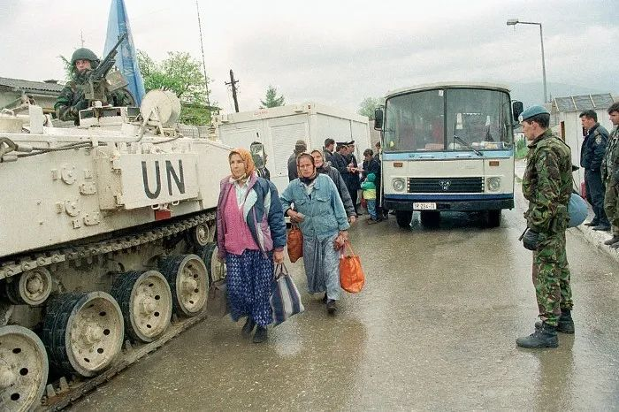
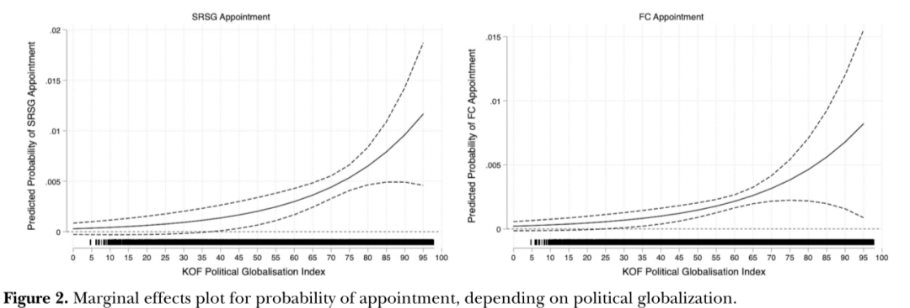
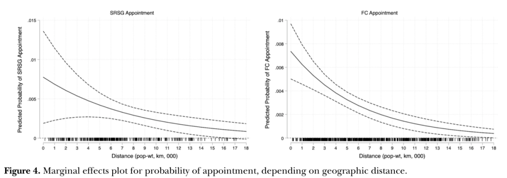
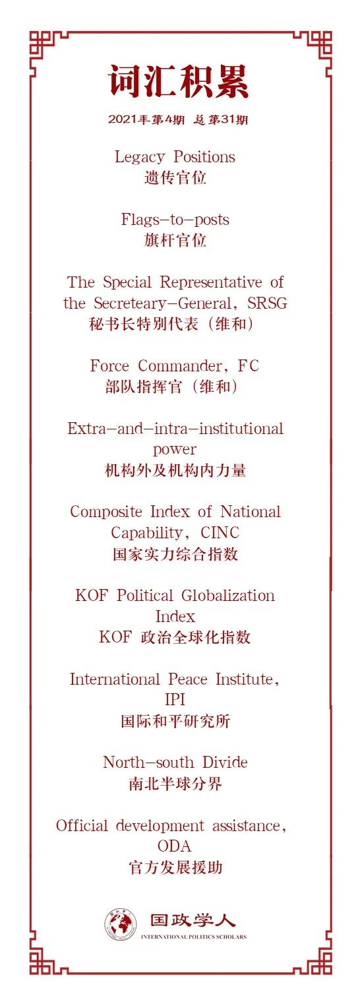

收录于合集

作品简介
【作者】 Kseniya Oksamytna, 伦敦国王大学战争研究系助理研究员；Vincenzo Bove, 华威大学政治科学系教授；Magnus Lundgren, 斯德哥尔摩大学政治科学系副教授。
【编译】 肖龙（国政学人编译员，佛罗里达大学博士研究生）
【校对】 任潇依
【审核】 吴天麟
【排版】 秦子宁
【美编 】马颖
【来源】 Oksamytna, K., Bove, V., & Lundgren, M. (2021). Leadership Selection in United Nations Peacekeeping. International Studeis Quarterly 65 (1), 16-28.
【归档】 《国际关系前沿》2021年第4期，总第31期。
期刊简介
《国际研究季刊》（International Studies Quarterly）是国际研究协会的旗舰期刊，由牛津大学出版社每年发行四期，旨在发表与国际研究中重要理论性、实证性、规范性主题相关的领先学术成果。根据Journal Citation Reports的数据，该期刊最新影响因子为2.146。
**** 联合国维和部队的领导人选择 ****
Leadership Selection in United Nations Peacekeeping ****
Kseniya Oksamytna
Vincenzo Bove
Magnus Lundgren
内容提要
各国都觊觎国际组织中的领导和幕僚职位。联合国维和行动中的文职领导和部队指挥的岗位对于成员国来说也具有吸引力。在维和行动首脑的选择中，联合国秘书处会平衡三种考虑：为了满足强大的成员国而任命其国民；表彰成员国对组织的贡献；以及确保所选官员拥有必要的技能。作者调查了于1990到2017年之间24次维和行动中的200位文职和军事领导的任命，发现向维和任务贡献部队能够增加获得维和领导职位的机会。维和官员的国家与冲突国家之间的地理距离也日益成为一个有利因素。联合国维和行动中的文职领导通常来自机构层面上的强国，而军事领导则来自主要的维和人员派遣国。抛开在任命过程中技能所扮演的角色，若是联合国对于部队派遣国和制度层面强国的依赖使其无法选择得力的维和行动领导者，那么这种依赖将成为一个功能障碍的来源。这种关系也影响着成员国之间力量严重不均等或依赖于自愿贡献的国际组织。
文章导读
01
引文
联合国维和行动的领导层通常有着与一般国际组织官员不同的特质。他们驻扎在世界各地的冲突地区，所做出的决定对当地民众有着决定生死的作用。他们的领导能力也能影响维和行动的成功与否以及是否可以获得地方支持。虽然维和部队官员有这样的影响力，但是学界对于他们的任命过程却知之甚少。联合国秘书团能否为这种极具挑战性的工作提供最好的人选？去抑或是奖励强大成员国的需要限制了其任命能力？
一般认为，国际组织中的领导职位可以给一个国家发挥影响力、提高关注度和取得信息的机会。因此，虽说领导层的任命在形式上是以能力为基础，但是各国都会积极游说，从而为本国国民争取领导之位。国际组织也会通过任命某国的公民来取悦强大的成员国、奖励有贡献的成员国或是利用与该国相关的能力技术，比如语言能力或对地方的了解程度。
这种考量是否存在于联合国维和部队中？本文作者考察了1990至2017年间200位联合国维和部队高级官员的任命过程，认为一个成员国获得领导人职位的可能性主要取决于三个因素：该国的力量及权力、对联合国维和行动的人员贡献以及该国候选人是否具有有相关的技术和能力。具体来讲，作者发现，一个国家在各种全球进程中的融入程度、对任务的人员贡献以及其地理相对位置均可以提高其收获任命的机会。
02
国际组织中的领导班子选择问题
国际组织中的领导职位对各成员国而言都具有吸引力。各国政府通过位居高位的本国国民来获取内部信息，甚至影响国际组织的政策走向。因为国际组织的领导职位不仅受人敬仰，还能获得各种津贴和补助，所以也可以被政府用来奖励忠实的本国官员。
在关键位置任职也可以使某国国民收获宝贵的经验，并以此来增加他们日后被派至相似甚至更高位置的机会，从而继续加强该国在该组织内的影响力。类似的做法可以发展成“遗传官位（legacy positions）”和“旗杆官位（flags-to- posts）”，或是其他的将某职位绑定给特定国家的非正式协议。比如，北大西洋公约组织秘书长的职位传统上是由欧洲人担任，而美国人则包揽了最高军事指挥职位。
以上做法可以被追溯至联合国成立初期，并延续至今。比如，负责维和事务的副秘书长一职从1997年开始便由法国人担任。在具体的维和任务中，高级官员的国别与其祖国对影响力的追求相关，也可以左右维和工作的方向和有效性。
多维度的联合国维和任务由一位文职外交官负责，即秘书长特别代表（the Special Representative of the Secretary- General，SRSG），全权打理该任务的军事、警务以及民众工作，并协调当地的其他联合国实体配合维和行动。而一项任务的军事负责人则是部队指挥官（Force Commander，FC），主管军事策略，包括武力使用。如同前维和事务副秘书长让-马里·盖埃诺（Jean-Marie Guéhenno）所说，维和任务的各个负责人拥有“地球上最困难，最不受重视的工作之一…概括了联合国所有的潜在矛盾，这个组织存在的理由是为人类服务，但是其影响力却取决于它能否赢得并管控好强大成员国的支持。

图一：在波黑的维和部队（来源：Stari Vitez ®）
特别代表和指挥官在维和行动中有着举足轻重的地位。在解决难题的时候，他们不仅会根据自身经验做出决定，其国籍、文化和个人特色也会对维和的过程和结果有很大影响。比如，日本外交官明石康在柬埔寨和前南斯拉夫都当过特别代表。在柬埔寨，他“以柔顺的态度同顽固派打交道且卓有成效”，但在波斯尼亚，他却被批评对塞尔维亚部队过于软弱，因为其“将和平至于正义之上的日式性格”，源自于日本在二战中的经验。
在对特别代表（作者认为部队指挥官亦是如此）的任命上，选择过程是一个“在国别线上的微妙平衡”。成员国通过这些职位来影响维和行动在某一国家或是基本方向上的走向。虽然定性研究和政策报告都提到了国别可能扮演的角色，我们还不能系统化地检视在各个历史时期以及维和领导人的类型中，有哪些考虑是比较重要的。接下来，作者将针对此问题提出假设并用实证方法进行探究。
03
决定维和部队领导人任命的三大因素
本文作者认为，一个人被任命至维和部队领导职位的机会主要取决于三类因素；祖国的力量，对该国的维和行动贡献的表彰，以及个人技能（通常与国别身份有关）。
1.国家力量：本文的国家力量包含了机构外和机构内两个方面。一是国家的一般能力，二是国家在机构层面上的声望。
2.对维和行动贡献的表彰：联合国维和部队的不成文规定便是部队指挥官通常来自贡献最大的国家。比如，意大利是黎巴嫩维和任务的最大贡献国之一，在2007至2018年间的五位部队指挥官里，意大利军官占了三位。而若是贡献突出的国家长期得不到表彰，则有可能会削减对特定任务或是对总体维和事务的支持。
3.个人技能：维和事务的负责人需要极强的战略、行政以及调解能力。此外，其他与国别相关的能力也在联合国秘书团的考虑范围内。比如一名官员的祖国与冲突国相邻或是拥有近似的人文背景，又或是官员拥有丰富的维和经验或关于当地的知识，这些都是可以影响维和任务的有利条件。
综上所述，作者提出以下三个假设以开展实证分析研究。
H1：维和行动领导人更有可能来自于力量强大的国家。
H2：维和行动领导人更有可能来自于主要的部队贡献国。
H3：拥有有价值的个人技能的官员更有可能拿到任命。
04
数据、方法、分析结果
在因变量方面，本文使用了作者自创的关于从1990年至2017年中的24次联合国维和行动，200多位维和行动高级官员的月度人事信息表，其中包括89位秘书长特别代表（文职领导人）和149位部队指挥官（军事领导人）的姓名、国别以及任期时长。这份资料集是迄今为止最全面的对维和部队领导层的概述。在本文以前，鲜有其他类似的尝试。
作者针对三条假设使用了不同的测量数据。首先，国家力量从两方面测量：机构外和机构内力量（extra-and-intra-institutional power）。作者使用了两组数据库测量机构外力量：国家实力综合指数（Composite Index of National Capability，CINC）和KOF政治全球化指数（KOF Political Globalization Index），以及是否为北约成员国。针对机构内力量的测量，作者使用了国际和平研究所（International Peace Institute, IPI）的维和数据库中的“对维和事务的财政贡献”数据，以及“是否为安理会常任理事国”指标。
本文结果表明，在以上的几个数据库中，政治全球化指标与更高的领导人任命相关。如同图1所预测，全球化指标越高，一个国家拿到任命的可能性就越高。对机构内力量的分析显示，是否来自安理会常任理事国对特殊代表的任命有显著影响，但对部队指挥官无影响。与以往认知不同的是，北约成员身份和财政贡献都与维和领导人任命无关。分析结果大体上证明，维和行动中的最高文职长官更有可能来自联合国机构内的强国，但军事长官更有可能来自于非强国。这个模式与联合国内的“南北半球分界（North- south divide）”一致。
表一：官员任命与政治全球化指标呈正相关（来源：原文）

针对第二条假设，作者使用了国际和平研究所维和数据库中的月度部队人员贡献数据。这项数据测量的是各个国家在不同的任务中所贡献的部队数量，以及一个国家对所有维和行动贡献的总人数。
根据这条假设的分析结果，一个国家对某次任务的贡献人数越多，则越有可能收获任务中的两类领导人任命。这个结论不仅确认了前面提到的部队贡献量与部队指挥官任命的联系，还进一步说明了部队的贡献也可以影响文职领导人的任命。另一方面，对维和部队贡献的总人数与部队指挥官的任命可能性呈正相关，但是与特别代表的任命没有显著关系。
表二：官员任命与部队人员贡献呈正相关（来源：原文）

最后，本文作者运用了数项代理数据来测量有价值的技能。通过观察维和领导人的祖国对冲突发生地的官方发展援助（official development assistance，ODA）的历史沿革，作者测量了官员对当地情况的熟悉程度。作者也评估了官员是否在之前的维和行动中有领导经验。在人文背景上，作者运用了语言距离和地理距离来衡量官员与冲突所在国的接近程度。此外，一般认为，当今的维和行动的一个主要目的之一是推广民主化。虽然也有学者认为近期趋势更加注重维持稳定，但一名在民主政府中工作生活过的官员仍然更有希望成为维和行动的负责人，所以作者也在分析中加进了关于民主政体的变量。
第三条假设的分析结果证明，人文背景的接近程度对维和行动的领导人任命有预言性的作用。来自与冲突所在国不甚接近的国家的官员有较少机会成为特殊代表或部队指挥官。作者同时观察到，已经为某个任务派遣过文职或军事领导人的国家更有机会继续为该任务派遣领导人。此结果也确认了前文提到的“遗传官位”逻辑，即一个国家得以持续安排多个领导人在同一个任务上。
表三：官员任命与地理距离呈负相关（来源：原文）

05
结论：现行任命机制的利与弊
联合国维和行动的领导人任命可以被官员的国别影响。高度参与全球进程、为维和行动提供大量部队、以及与冲突所在国接近的国家更有可能获得派遣文职或军事领导人的机会。联合国机构中的传统强国，尤其是西方的常任理事国以及被多次当选进入安理会的国家，与其他国家相比提供了更多的文官领导人。主要部队贡献国以及在语言上与冲突所在国相近的国家也有更高的机率获得领导人的任命。然而，作者在分析中没有发现任何关于国家综合实力、北约成员身份、民主政体、个人经历或者向冲突国家提供协助的重要性。
在对维和部队的高级外交人员的选拔中，如此显著的依赖于机构力量显然暴露了联合国乃至其他国际组织在道德层面和实用层面上的问题。正如前维和事务副秘书长盖埃诺所说，这种做法“削弱了指挥官们对联合国的忠诚度并导向危险的岗位轮换系统，限制了申请人的范围，还冒着有时必须任命错误的指挥官的风险”。作者在本文中的分析结果证明，这种做法不仅存在对军事指挥官的任命中，同时也存在于对文职指挥官的任命中。然而，作者也承认，任命对冲突所在国熟悉或是精通当地语言的官员对维和行动有不可忽视的好处。
最后，作者为联合国机构内存在的“南北半球分界”以及根本层面上的不平等敲响了警钟。的确，以安理会成员身份为主的所谓机构上的声望不是唯一的影响力来源。但是，作为主要部队贡献国的发展中国家时常需要通过牺牲军人性命来赢得影响力，而制度上和外交上都很强大的发达国家却仅需要通过游说便可达到相同结果。因此，本文也揭露了存在于国际组织中的等级制度和不平等现象。
译者评述
本文所呈现的结果为现今的联合国维和部队官僚选任机制提供了系统化的对比和分析，并以此为案例，评述了现代国际组织中的领导人任命机制。联合国维和行动在世界政治中的影响巨大，然而，其也无法摒弃政治组织的各种短板，即对于强大贡献国的过度依赖以及存在于成员国之间的不平等。如同本文提到的，多年来，发展中国家一直都对西方在联合国官僚机构中的支配地位抱怨纷纷，并指责其因为内斗和权力纷争而无法有效发挥保护职能，比如九十年代卢旺达的悲剧（Salton, 2017）。在学界，关于联合国内部的不平等问题的观察和探讨只停留在解释性和传闻证据上。本文通过数据分析来验证这一问题，这在笔者的短浅印象中，应是近年来同类研究中的首创。
但是，本文绝非完美。由于本文作者主要采用数据分析的方法，使得文章在提供分析结果之后无法继续解释问题。虽然作者在本文提到了许多真实案例并引用了联合国官员的发言，但是大部分的尝试都是浅尝辄止。比如说，作者在文章中提到的韩国特别代表崔英镇（Choi Young-Jin）和日本特别代表明石康（Yasushi Akashi）均被派遣至跟其祖国人文背景差异甚大的国家或地区，与文章的结论不符。继续剖析这两人的任命过程或是援引其他案例或许可以帮助作者们更好地解释结论中的三大因素，并讨论这三大因素是否都有一样的影响力。在这一点上，笔者认为，在数据分析之后融入两至三个案例研究或许可以加深本文的解释能力。当然，这或许就已超出了文章的探究范围了。
纵然如此，本文中的讨论依然对国际秩序研究有新颖的启示。联合国开展维和行动已经七十余年，当今的国际形势变化多端，维和行动也将面临更加复杂的挑战。如何在履行保护职能的同时，保持甚至扩大国际社会对维和行动的支持，并促使各成员国积极参与并做出贡献，是联合国各个机构需要持续思考的问题。
参考文献
[1] Salton, Herman T. 2017. Dangerous Diplomacy: Bureaucracy, Power Politics, and the Role of the UN Secretariat in Rwanda. Oxford: Oxford University Press.
词汇整理

文章观点不代表本平台观点，本平台评译分享的文章均出于专业学习之用, 不以任何盈利为目的，内容主要呈现对原文的介绍，原文内容请通过各高校购买的数据库自行下载。
好好学习，天天“在看”
国政学人
支持学术公益与知识传播
微信扫一扫赞赏作者 __赞赏
已喜欢，对作者说句悄悄话
取消 __
发送给作者
发送
最多40字，当前共字
上一页 1/3 下一页
长按二维码向我转账
支持学术公益与知识传播
受苹果公司新规定影响，微信 iOS 版的赞赏功能被关闭，可通过二维码转账支持公众号。